Poe to Pastel: The Evolution of Goth Makeup
The Gothic culture is built and based really upon one rule, and that is an attitude of individuality which expresses who you really are rather than what you want people to think you are. So that of course generates a lot of creativity and individuality within the subculture, which makes it impossible to define. That's the same with Goth makeup, which is more about your attitude than about the actual way you want to define your look through makeup. Just like Goth wannabees who attempt to outwardly look like a Goth through wearing similar clothes, accessories and makeup, they can be spotted a mile away because you can't fake it.
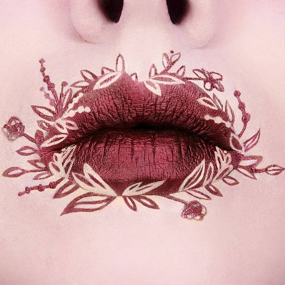Goth makeup attributes
Does that mean there's no rules whatsoever with Goth makeup? In theory yes, but in practicality, like the Goth subculture, there are identifiable practices which at least point to a person as presenting themselves as Goth.
Like in all Gothic practices, there are a lot of exceptions to the flexible rules, but like shoes, trench coats, corsets and other accessories Goths wear or use, there are a number of them the majority of Goth culture uses, so you can get a pretty accurate idea of who they are and what they're saying through what they wear and the makeup they use.
We'll show some exceptions here, so you can see the rules are very flexible and just barely predictable.
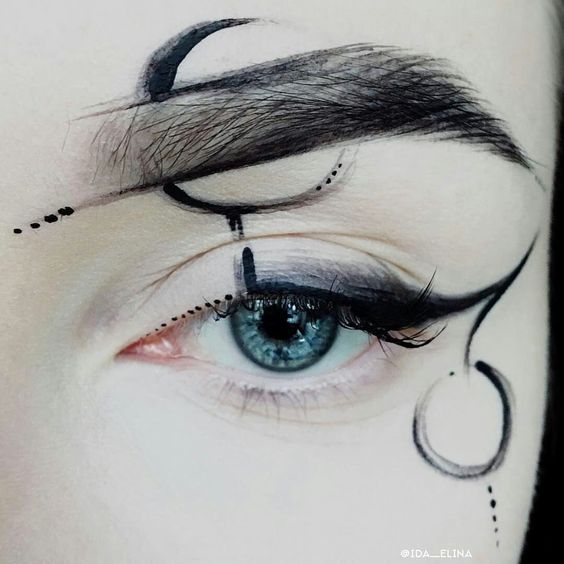Dark Eyes, Red Trails
With an occasional exception, Gothic makeup and face painting is centered around the look of the eyes, although secondary elements like the color of the lips and foundation on the face are important as well.
In this example there are the dark eyes with the red trails used to signify blood dripping from them. One thing I like about the eyes is the way the dark area was enlarged to the point where the trails were dripping over it. It's very effective with this Gothic face, giving the sense of a walking undead.
There is also a white base that helps emphasize the rest of the darker elements included on the face. The only thing I would have done different would have been on the lips. A deep black or red would have looked better with the Gothic zombie design.
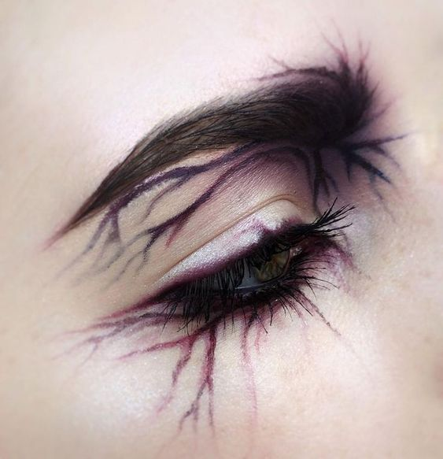What most think of Goth makeup
I know there is no such thing as a typical Goth look in any area of the Gothic lifestyle, but there are patterns that can be followed and relied on a prevalent in the subculture, and this Gothic makeup look, and general Gothic look in general, is definitely close to what most people think of when thinking of what a Goth looks like. She does look good without really looking mainstream.
The problem seems to be that so many fashion designers have borrowed from the Goth look and brought it to the mainstream, that this looks too familiar in a way, even though it's very Gothic and looks great.
More traditional Goth makeup look
Trad Goth makeup often consists of a pallor base, eccentric eye makeup and cool-toned contour. In many styles, the inner corner of the eyebrow is brought down the nose bridge with an eye shadow or liner to join with an extended inner-eye line. Trad goth looks are likely the most recognisable amongst fellow styles.
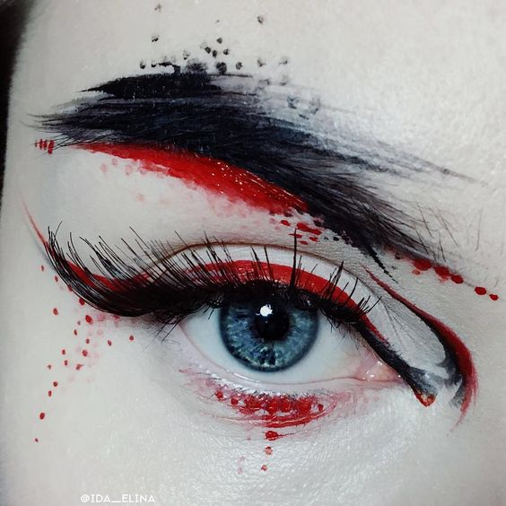Gothic Makeup Video Tutorials
Next we have several Gothic makeup video tutorials, all of them sporting a different look to generate a number of ideas.
There is inspiration from everything from Edward Scissorhands, "Samara" in - The Ring, and three other unique looks, expressing a range of possibilities depending on individual preferences for Gothic faces, and in one case, an entire Gothic ensemble.
Goth makeup can't be defined
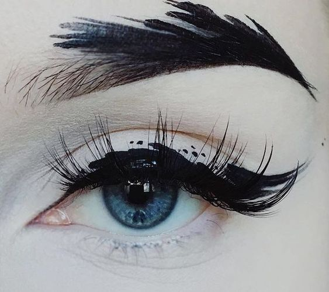So if you're not a Goth, you can see how different the use of makeup can be, as well as many other fashions statements they make. The key thing to understand the subculture in general, is to remember that they consider themselves as defining what Goth is on an individual basis. So in essence, Goth is what every individual who has the attitude of a Goth says it is.
In other words, Goth is really undefinable, although, like shown here, there are some basic and fundamental practices many of them partake in, but that's based probably more on the attitude which then expresses itself in similar ways, than a planned out uniformity, which really doesn't exist.
Ink for Gothic Tattoos: Understanding the Dark and Mysterious World of Gothic Tattoos
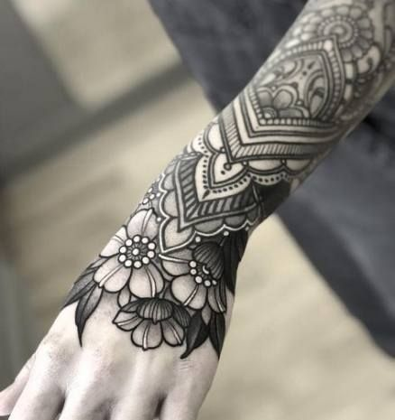Step into the shadows and embrace the allure of gothic tattoos. These captivating works of art delve into the realm of darkness, evoking an air of mystery and intrigue. With their intricate designs and deep symbolism, gothic tattoos have become a prominent expression of individuality and a tribute to the dark side of human existence. In this article, we will explore the fascinating world of gothic tattoos, unravel their history, delve into their meanings, and provide practical insights for tattoo artists looking to create their own gothic masterpieces.
What Are Gothic Tattoos?
Gothic tattoos draw inspiration from various sources, including gothic literature, art, and subcultures. Rooted in the Gothic movement of the 18th and 19th centuries, these tattoos reflect the romanticized darkness and macabre themes associated with Gothic aesthetics. With influences ranging from Gothic novels like Mary Shelley's "Frankenstein" to Edgar Allan Poe's haunting poetry, gothic tattoos transport us to a realm where beauty and darkness coexist.
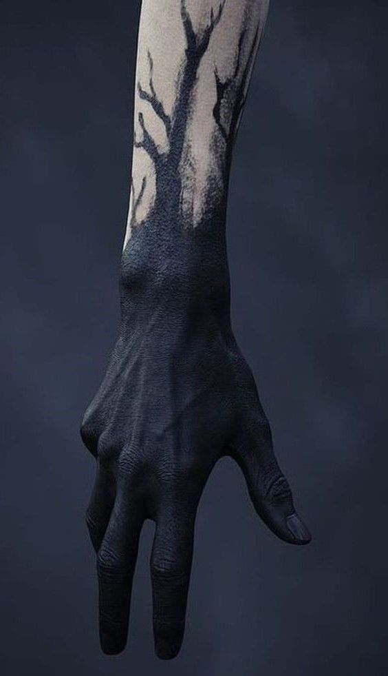What do Gothic Tattoos mean?
Symbolism plays a crucial role in gothic tattoos. Each design tells a unique story through its intricate elements. Skulls, a common symbol in gothic tattoos, represent mortality and the fleeting nature of life. Dark creatures like bats, ravens, and wolves embody mystery, power, and the shadows lurking within. Roses with thorns combine beauty and pain, symbolizing the duality of life. Gothic architecture, with its intricate cathedrals and haunted mansions, evokes a sense of awe and melancholy. Religious imagery, such as crosses and angels, adds a touch of spirituality and contemplation to the dark aesthetic.
Creating captivating gothic tattoos requires a deep understanding of the style and its nuances. Tattoo artists should immerse themselves in gothic literature, art, and subcultures to gain a comprehensive understanding of the style. This knowledge will help them infuse their designs with authenticity and depth. Attention to detail is crucial in gothic tattoo art, with intricate linework and shading bringing the designs to life. Customization and personalization are also essential, as collaborating closely with clients to understand their vision and incorporating elements of personal meaning create unique and meaningful designs.
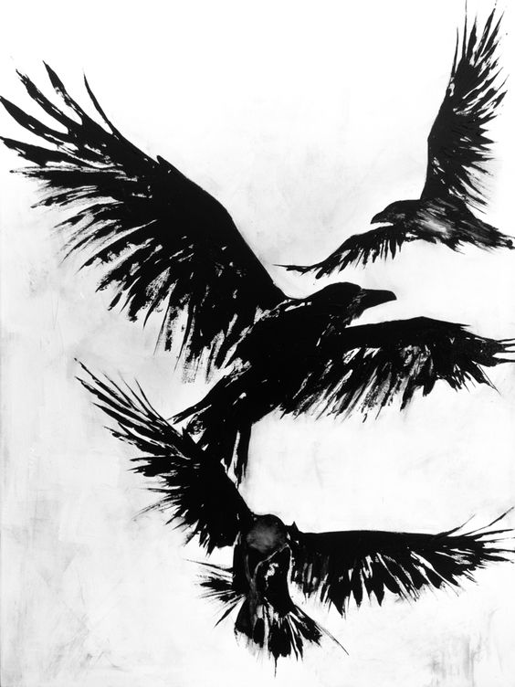Where are good locations for gothic tattoos?
Considering placement and size is vital in gothic tattoos. Larger designs may work well on the back, chest, or thigh, allowing for intricate details to shine. Smaller pieces can be placed on wrists, ankles, or behind the ear, providing a subtle but impactful statement. By carefully considering the placement, tattoo artists can ensure that the design complements the body's natural contours.
In conclusion, gothic tattoos offer a gateway to the dark and mysterious realm of artistic expression. Immersing oneself in the history, symbolism, and aesthetics of gothic tattoos enables tattoo artists to create captivating and meaningful works of art. By embracing the shadows, letting creativity flow, and adorning the world with captivating gothic masterpieces, artists can honor the rich tradition of gothic tattooing and provide clients with a unique and unforgettable experience.
Now that we have grasped the basics, you might go ahead and look at some gothic inkspiration. Below, we've compiled a goth sleeve tattoo or two for you to enjoy and described some of the most common symbols used in these creations.
#1 Monster Coming Out Of The Dark Tattoo
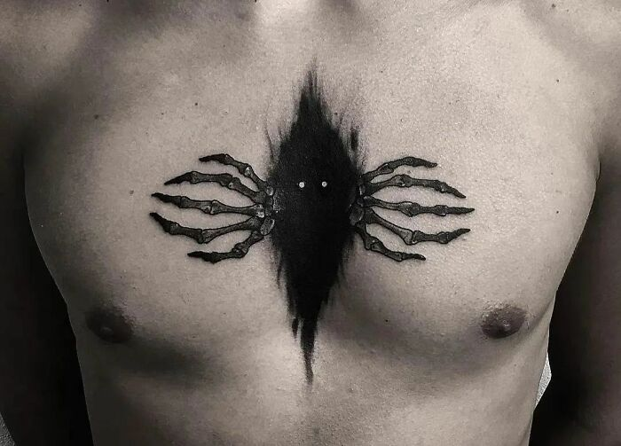Meaning of Gothic Tattoos
The word "gothic" is usually associated with gruesome, dark, and enigmatic concepts of our world. Burning demons, twisted angels, black goats, and scary crows are some of the most popular things found in these tattoos. The meaning of these tattoos can change depending on the subject.
Gothic Raven Tattoos
The raven has gotten quite a lot of attention in the Gothic world. Literature sees this bird quoting the ever-famous "Nevermore" — a disturbing message to hear at midnight. In art, the raven represents an apocalyptic episode or the coming of dread. The meaning of the bird stays the same in a gothic raven tattoo, symbolizing something dreary, like grief over a lost love.
#2 Salem Upper Arm Tattoo
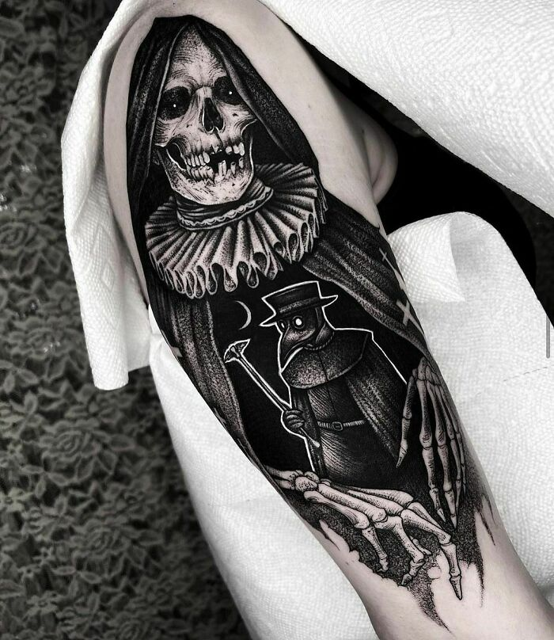#3 "The Mysterious Elegance Of The Death" Arm Tattoo

Gothic Architecture Tattoos
Gothic buildings were very popular throughout the middle ages. Although contemporary architecture is now more desirable, gothic structures built back then are still famous even after several centuries. While new gothic buildings are no longer built, their legacy survives through gothic architecture tattoos. Like the structures, the tattoos can symbolize longevity in the face of time and history.
#4 Headless Horseman Full Back Tattoo
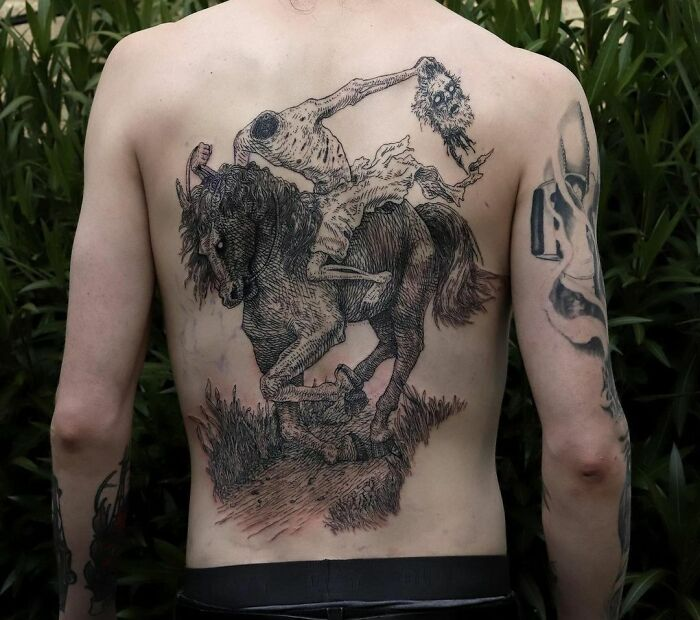#5 "Hail Cycling" Arm Tattoo

#6 Love At First Sight Upper Arm Tattoo